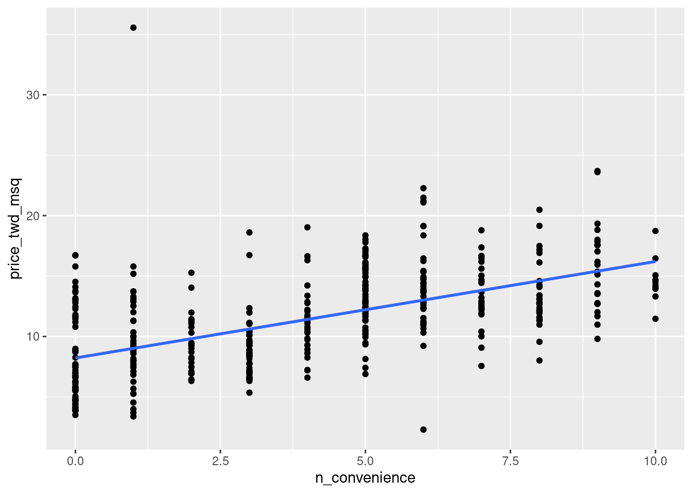
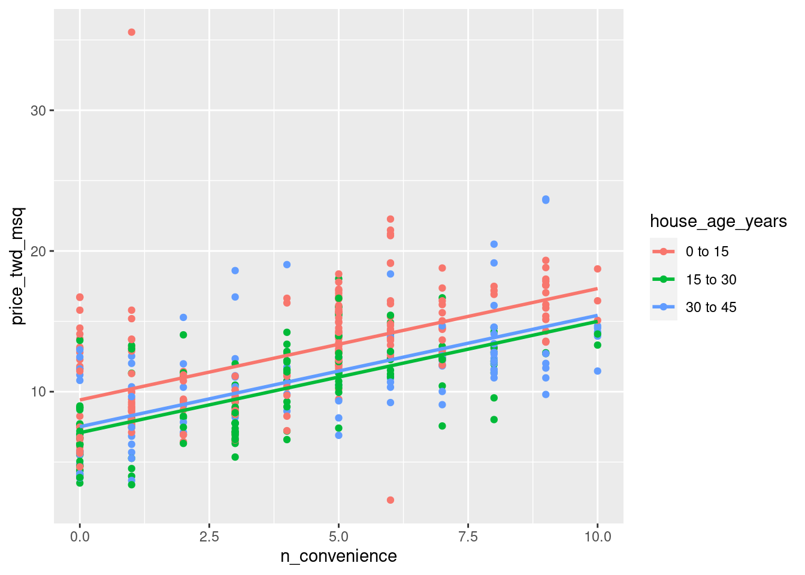

library(mTools)
library(tidyverse)
library(here)
library(fst)
library(broom)
taiwan_real_estate <- read_fst(here("data", "taiwan_real_estate2.fst"))
# Fit a linear regr'n of price_twd_msq vs. n_convenience
mdl_price_vs_conv <- lm(price_twd_msq ~ n_convenience, data = taiwan_real_estate)
# See the result
DT_tidy_model(mdl_price_vs_conv)Intermediate Regression in R
Parallel Slopes
Fitting a parallel slopes linear regression
In Introduction to Regression in R, you learned to fit linear regression models with a single explanatory variable. In many cases, using only one explanatory variable limits the accuracy of predictions. That means that to truly master linear regression, you need to be able to include multiple explanatory variables.
The case when there is one numeric explanatory variable and one categorical explanatory variable is sometimes called a “parallel slopes” linear regression due to the shape of the predictions—more on that in the next exercise.
Here, you’ll revisit the Taiwan real estate dataset. Recall the meaning of each variable.
Fit a linear regr’n of price_twd_msq vs. n_convenience
Fit a linear regr’n of price_twd_msq vs. house_age_years, no intercept
# Fit a linear regr'n of price_twd_msq vs. house_age_years, no intercept
mdl_price_vs_age <- lm(price_twd_msq ~ house_age_years -1, data = taiwan_real_estate )
# See the result
DT_tidy_model(mdl_price_vs_age)Fit a linear regr’n of price_twd_msq vs. n_convenience plus house_age_years, no intercept
# Fit a linear regr'n of price_twd_msq vs. n_convenience plus house_age_years, no intercept
mdl_price_vs_both <- lm(price_twd_msq ~ n_convenience
+ house_age_years - 1,
data = taiwan_real_estate)
# See the result
DT_tidy_model(mdl_price_vs_both)Interpreting parallel slopes coefficients
For linear regression with a single numeric explanatory variable, there is an intercept coefficient and a slope coefficient. For linear regression with a single categorical explanatory variable, there is an intercept coefficient for each category.
In the “parallel slopes” case, where you have a numeric and a categorical explanatory variable, what do the coefficients mean?
taiwan_real_estate and mdl_price_vs_both are available.
- For each additional nearby convenience store, the expected house price, in TWD per square meter, increases by 0.79.
Visualizing each explanatory variable
Being able to see the predictions made by a model makes it easier to understand. In the case where there is only one explanatory variable, ggplot lets you do this without any manual calculation or messing about.
To visualize the relationship between a numeric explanatory variable and the numeric response, you can draw a scatter plot with a linear trend line.
To visualize the relationship between a categorical explanatory variable and the numeric response, you can draw a box plot.
taiwan_real_estate is available and ggplot2 is loaded.
- Using the taiwan_real_estate dataset, plot the house price versus the number of nearby convenience stores.
- Make it a scatter plot.
- Add a smooth linear regression trend line without a standard error ribbon.
# Using taiwan_real_estate, plot price_twd_msq vs. n_convenience
ggplot(taiwan_real_estate, aes(n_convenience, price_twd_msq)) +
# Add a point layer
geom_point() +
# Add a smooth trend line using linear regr'n, no ribbon
geom_smooth(method = "lm", se = FALSE)
- Using the taiwan_real_estate dataset, plot the house price versus the house age.
- Make it a box plot.
# Using taiwan_real_estate, plot price_twd_msq vs. house_age_years
ggplot(taiwan_real_estate, aes( house_age_years, price_twd_msq)) +
# Add a box plot layer
geom_boxplot()Visualizing parallel slopes
The two plots in the previous exercise gave very different predictions: one gave a predicted response that increased linearly with a numeric variable; the other gave a fixed response for each category. The only sensible way to reconcile these two conflicting predictions is to incorporate both explanatory variables in the model at once.
When it comes to a linear regression model with a numeric and a categorical explanatory variable, ggplot2 doesn’t have an easy, “out of the box” way to show the predictions. Fortunately, the moderndive package includes an extra geom, geom_parallel_slopes() to make it simple.
taiwan_real_estate is available; ggplot2 and moderndive are loaded.
- Using the taiwan_real_estate dataset, plot house prices versus the number of nearby convenience stores, colored by house age.
- Make it a scatter plot.
- Add parallel slopes, without a standard error ribbon.
library(moderndive)
# Using taiwan_real_estate, plot price_twd_msq vs. n_convenience colored by house_age_years
ggplot(taiwan_real_estate, aes( n_convenience , price_twd_msq, color = house_age_years)) +
# Add a point layer
geom_point() +
# Add parallel slopes, no ribbon
geom_parallel_slopes(method = "lm", se = FALSE)
Predicting with a parallel slopes model
While ggplot can automatically show you model predictions, in order to get those values to program with, you’ll need to do the calculations yourself.
Just as with the case of a single explanatory variable, the workflow has two steps: create a data frame of explanatory variables, then add a column of predictions. To make sure you’ve got the right answer, you can add your predictions to the ggplot with the geom_parallel_slopes() lines.
taiwan_real_estate and mdl_price_vs_both are available; dplyr, tidyr, and ggplot2 are loaded.
Make a grid of explanatory data, formed from combinations of the following variables.
- n_convenience should take the numbers zero to ten.
- house_age_years should take the unique values of the house_age_years column of taiwan_real_estate.
# Make a grid of explanatory data
explanatory_data <- expand.grid(
# Set n_convenience to zero to ten
n_convenience = 0:10,
# Set house_age_years to the unique values of that variable
house_age_years = unique(taiwan_real_estate$house_age_years)
)
# See the result
explanatory_data[1:10,] %>% data_table()- Add a column to the explanatory_data named for the response variable, assigning to prediction_data.
- The response column contain predictions made using mdl_price_vs_both and explanatory_data.
# Add predictions to the data frame
prediction_data <- explanatory_data %>%
mutate(price_twd_msq = predict(mdl_price_vs_both, explanatory_data) )
# See the result
prediction_data[1:10,] %>% data_table()- Update the plot to add a point layer of predictions. Use the prediction_data, set the point size to 5, and the point shape to 15.
taiwan_real_estate %>%
ggplot(aes(n_convenience, price_twd_msq, color = house_age_years)) +
geom_point() +
geom_parallel_slopes(se = FALSE) +
# Add points using prediction_data, with size 5 and shape 15
geom_point(data =prediction_data,
aes(n_convenience, price_twd_msq),
size = 5, shape = 15)Manually calculating predictions
As with simple linear regression, you can manually calculate the predictions from the model coefficients. The only change for the parallel slopes case is that the intercept is different for each category of the categorical explanatory variable. That means you need to consider the case when each each category occurs separately.
taiwan_real_estate, mdl_price_vs_both, and explanatory_data are available; dplyr is loaded.
- Get the coefficients from mdl_price_vs_both, assigning to coeffs.
- Assign each of the elements of coeffs to the appropriate variable.
# Get the coefficients from mdl_price_vs_both
coeffs <- coefficients(mdl_price_vs_both)
# Extract the slope coefficient
slope <- coeffs[1]
# Extract the intercept coefficient for 0 to 15
intercept_0_15 <- coeffs[2]
# Extract the intercept coefficient for 15 to 30
intercept_15_30 <- coeffs[3]
# Extract the intercept coefficient for 30 to 45
intercept_30_45 <- coeffs[4]Add columns to explanatory_data.
- To choose the intercept, in the case when house_age_years is “0 to 15”, choose intercept_0_15. In the case when house_age_years is “15 to 30”, choose intercept_15_30. Do likewise for “30 to 45”.
- Manually calculate the predictions as the intercept plus the slope times n_convenience.
prediction_data <- explanatory_data %>%
mutate(
# Consider the 3 cases to choose the intercept
intercept = case_when(
house_age_years == "0 to 15" ~ intercept_0_15,
house_age_years == "15 to 30" ~ intercept_15_30,
house_age_years == "30 to 45" ~ intercept_30_45
),
# Manually calculate the predictions
price_twd_msq = slope*n_convenience + intercept
)
# See the results
prediction_data[1:10,] %>% data_table()Comparing coefficients of determination
Recall that the coefficient of determination is a measure of how well the linear regression line fits the observed values. An important motivation for including several explanatory variables in a linear regression is that you can improve the fit compared to considering only a single explanatory variable.
Here you’ll compare the coefficient of determination for the three Taiwan house price models, to see which gives the best result.
mdl_price_vs_conv, mdl_price_vs_age, and mdl_price_vs_both are available; dplyr and broom are loaded.
- Get the unadjusted and adjusted coefficients of determination for mdl_price_vs_conv by glancing at the model, then selecting the r.squared and adj.r.squared values.
- Do the same for mdl_price_vs_age and mdl_price_vs_both.
my_models <- list(mdl_price_vs_conv = mdl_price_vs_conv,
mdl_price_vs_age = mdl_price_vs_age,
mdl_price_vs_both = mdl_price_vs_both)
nms_ms <- names(my_models)
my_dfs <- lapply(seq_along(my_models), function(x){
my_models[[x]] %>%
glance() %>%
mutate(lm_model =nms_ms[x] ) %>%
select(lm_model, r.squared, adj.r.squared, sigma)
})
model_glance <- data.table::rbindlist(my_dfs)
model_glance %>%
round_all_num_cols() %>%
data_table()- Which model does the adjusted coefficient of determination suggest gives a better fit?
- mdl_price_vs_both
Comparing residual standard error
The other common metric for assessing model fit is the residual standard error (RSE), which measures the typical size of the residuals.
In the last exercise you saw how including both explanatory variables into the model increased the coefficient of determination. How do you think using both explanatory variables will change the RSE?
mdl_price_vs_conv, mdl_price_vs_age, and mdl_price_vs_both are available; dplyr and broom are loaded.
- Shown as sigma below
model_glance %>%
round_all_num_cols() %>%
data_table()- The model with the list sigma mdl_price_vs_both